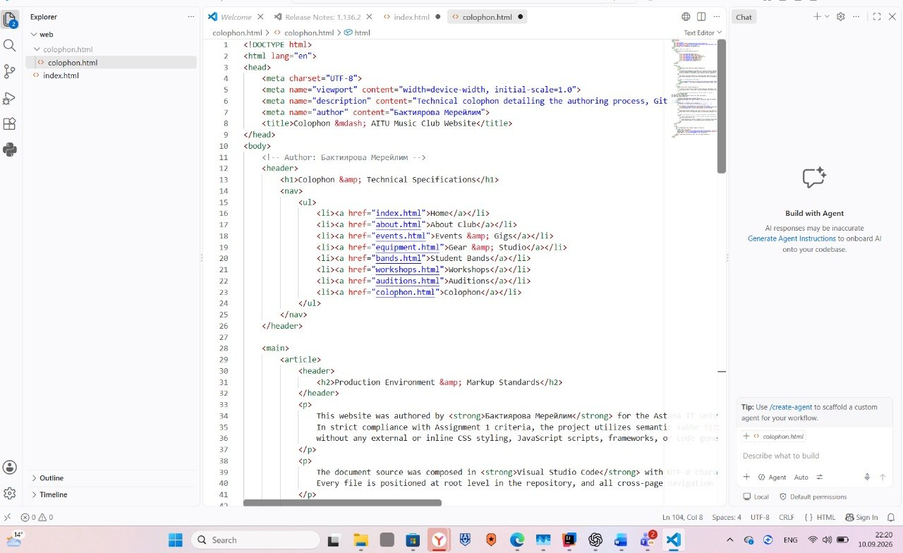

This website was built by the AITU Music Club web team for the Astana IT University student community
as part of the Introduction to Web Technologies course.
The pages use semantic HTML5 for structure,
Bootstrap 5.3.3 for layout and components, and one small custom stylesheet for brand colours and corrections.
The markup is prepared for JavaScript, which will be added in later assignments; no custom scripts are used at this stage.
The document source was composed in Visual Studio Code with UTF-8 character encoding.
The HTML files are stored in the repository root, the stylesheets are stored in the css folder,
and the images are stored in the images folder.

Figure 1: Local editor environment during validation and git revision staging.
Git Routine & Terminal Commands
To maintain revision history, every team member committed from their own account across several days.
Press Ctrl + ` to launch the integrated terminal, then execute the following sequence.
The final command marks the frozen state of the HTML and CSS:
git status
git add .
git commit -m "feat: finish markup and prepare hooks for JavaScript"
git push origin main
git tag midterm
git push origin midterm
Terminal output confirmation from Git client:
nothing to commit, working tree clean
Standards Verification & Validation
All documents in this repository are verified with the official
W3C Nu HTML Checker
before submission. Every link and every form is also clicked through at desktop and phone width.
Deprecated presentation elements like <font> and <center> were omitted.
Layout, spacing, navigation and buttons are built with Bootstrap classes rather than hand-written CSS.